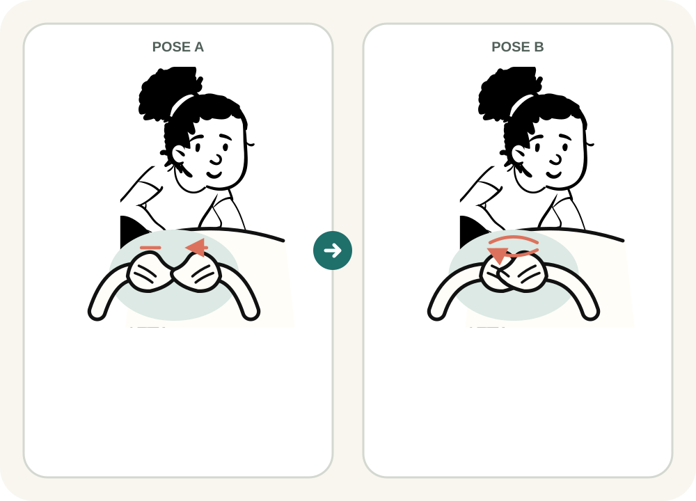
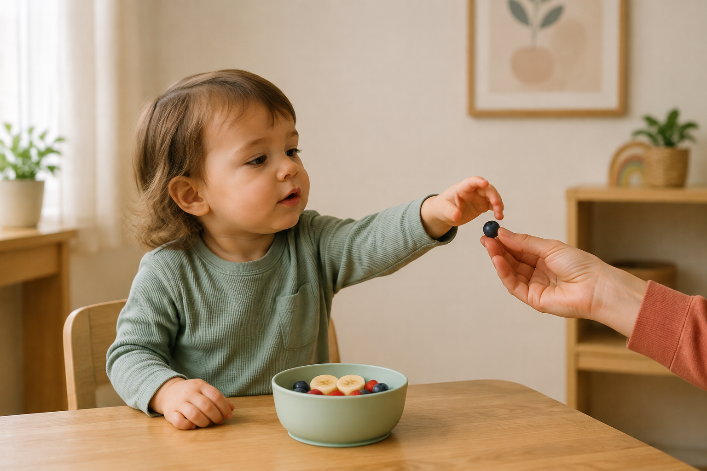

MORE / MÁS
One reviewed sign · reusable family materials
Kinder Signs · Available now
Kinder Signs helps early-years content teams prepare one reviewed sign and reuse it across tutorials, printables and stories for nursery and home.


One reviewed sign · reusable family materials
Business value
The current prototype demonstrates the production opportunity without claiming proven time savings or revenue.
Create several family materials from one reviewed sign instead of preparing every format from scratch.
Use the same reviewed sign across video tutorials, Flashcards, Routine Cards and Stories.
Package reusable digital materials as an additional service for nurseries and families.
Where AI adds value
Computer Vision helps identify useful movement and poses from the reference. A human still reviews the sign before it becomes family content.
A trusted sign movement starts the process.
Hand and pose landmarks make movement evidence visible.
Useful poses and movement paths can be compared.
A person chooses the clearest evidence and approves the visual.
The decision and its source remain connected.
The reviewed sign becomes useful formats for families.
Family materials
The content team prepares them; the nursery chooses what each group or family receives.
A short visual guide families can watch before practising in an everyday routine.
A visual reminder families can keep or print.
A simple prompt for using the sign during a familiar routine.
Reinforce the sign through a short everyday story.
Practise familiar signs through repetition and rhythm.
Product preview
Illustrative tutorials exist for MORE, HELP and MILK. The preview does not claim that every format exists for every sign.

MÁS
Snack time · Mealtime · Playtime
Checking video availability…

AYUDA
Getting ready
Checking video availability…

COMER
Mealtime
Checking video availability…

DORMIR
Bedtime
Checking video availability…

LECHE
Milk time
Checking video availability…

AGUA
Drink break
Checking video availability…
The available motion previews were prepared separately for the MVP. They demonstrate the intended family experience and are not generated automatically from the reference-review run.
For nurseries
Browse the available content, select the materials and share them with the right group or family.